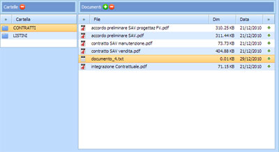
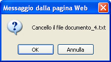

Per Eliminare i documenti caricati in una cartella bisogna selezionanare il nome della Cartella e il
Documento:

I documenti caricati possono essere cancellati singolarmente cliccando sull'icona 

L'operazione di cancellazione richiede la conferma del file da eliminare.